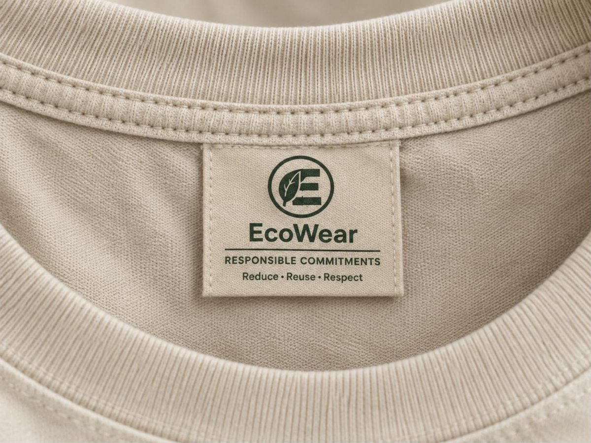
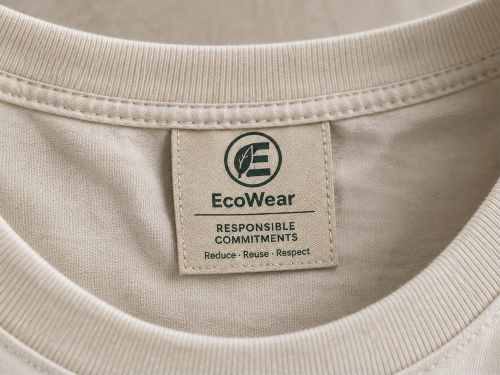

Our label
The EcoWear label certifies the environmental approach of an independent creator: how they choose their materials, make, ship, repair and take back their pieces. It is granted after an audit by an independent auditor, and renewed every year.

The woven label, sewn inside the pieces of a certified creator

Three commitments on every label: reduce, reuse, respect
Six public criteria
Each criterion is scored from 0 to 5 by the auditor, for a total out of 30.
1. Materials
Recycled, upcycled, deadstock or organic materials, and as few new synthetic fibers as possible.
2. Production
Small batches or made to order, in workshops that the creator can name.
3. Transparency
Suppliers, the origin of each material and the place of making are documented and published.
4. Transport and packaging
Short journeys, no air freight, and packaging without plastic.
5. Durability and repair
Solid pieces, care advice for every piece, and a repair service.
6. End of life
Offcuts reused, and pieces taken back for repair, resale or recycling.
20/30
points needed, with at least 2 in every criterion
1 year
of validity, then a new audit
6
creators certified so far
Our rules
No audit, no label.
Audits are carried out by independent auditors, who work neither for EcoWear nor for the creators they check.
If a creator stops meeting the criteria, the label is suspended, then withdrawn if nothing changes within three months.
Our criteria are public and open to every independent creator who can meet them.
Why a real certification matters
Since 27 September 2026, European rules only allow sustainability labels that rest on a certification scheme checked by an independent third party, or that are set up by public authorities (source: European Commission). That is why our label rests on public criteria, independent audits and clear sanctions.
Check a certificate
Type the certificate number written next to the label, in capitals. Try EW-2026-003, or EW-2026-007 to see a suspended label.